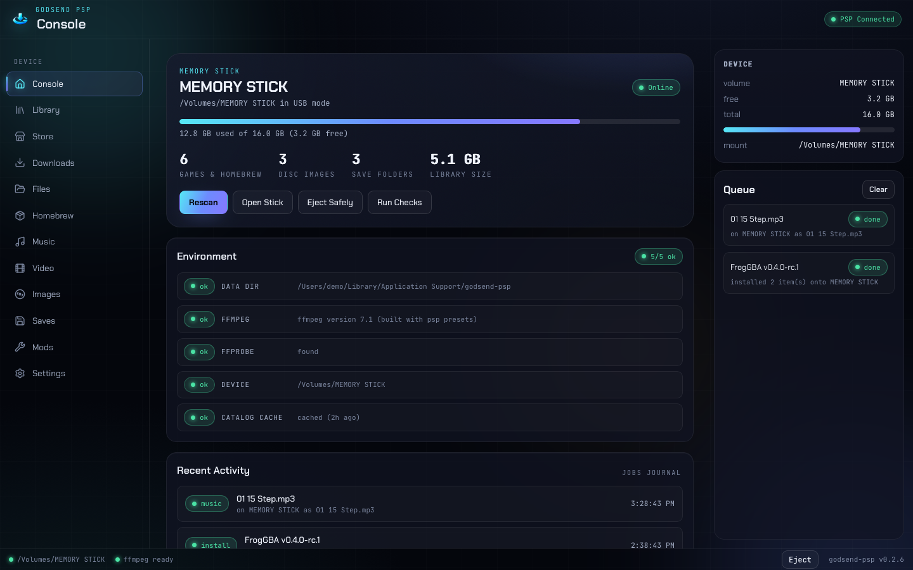

Store
Search the game-search debrid index (PSP platform) and Internet Archive megathread sets. Per-game link lists with ddl, torrent and magnet entries, resolved through Real-Debrid or TorBox.
Plug the console in, open one window. Browse the store with debrid and Internet Archive sources, install homebrew and custom firmware, push music and video, convert ISO to CSO, back up saves, manage plugins, and keep a local library of games with covers and mods.



Search the game-search debrid index (PSP platform) and Internet Archive megathread sets. Per-game link lists with ddl, torrent and magnet entries, resolved through Real-Debrid or TorBox.
Sixteen-connection downloads on every platform, with a single connection fallback. Configurable download folder and a Downloads page for the queue.
PSP and local libraries side by side. A serial-keyed local database keeps titles, covers and animation URLs; copy games between the stick and the computer in one click.
Catalog installers for ARK-4, ARK-5, FrogGBA, TempGBA4PSP-mod and DaedalusX64 with layout detection; import any homebrew zip.
Music to PSP/MUSIC and video to PSP/VIDEO with ffmpeg presets (MP3/M4A, AVC 480x272) and .THM thumbnails.
Pure Rust ISO to CSO conversion, UMD metadata from the ISO tree, save backup and restore, and a two-pane file manager.
Per-game mods catalog keyed by serial, pulled into the download folder. seplugins toggles and XMB theme installs too.
The same engine headless: devices, scan, catalog, install, music, video, iso-import, convert, saves, plugins, themes, doctor.
GoFile is the primary mirror, file.kiwi the encrypted backup. Links are refreshed weekly because free-tier files expire.
Loading the current links from downloads.json...